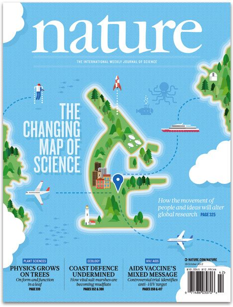
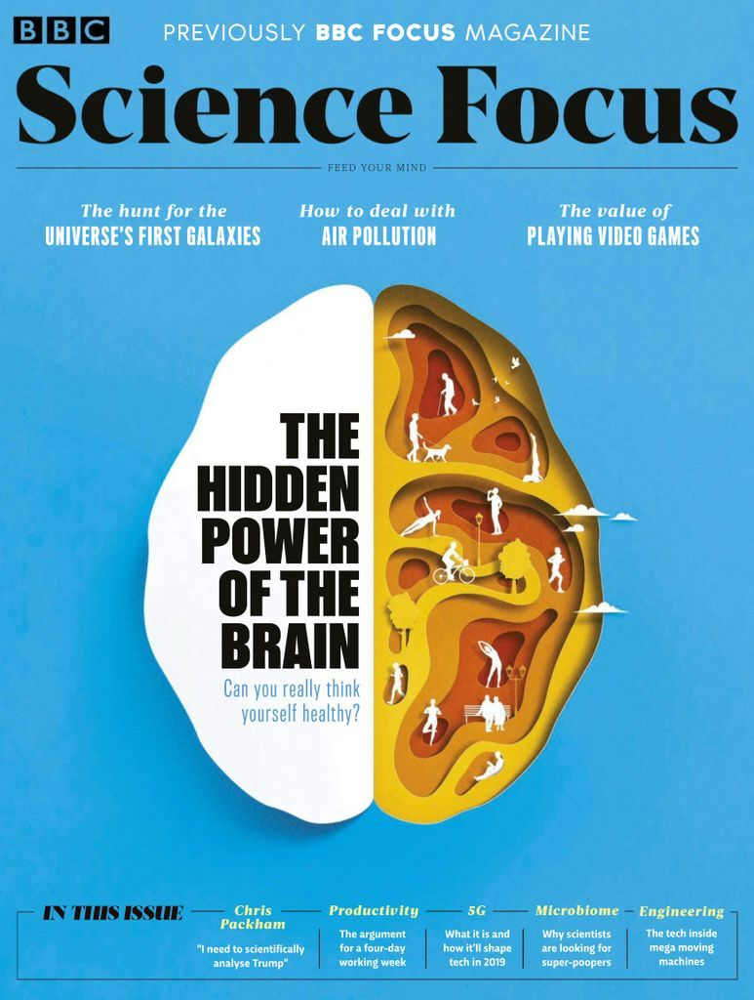
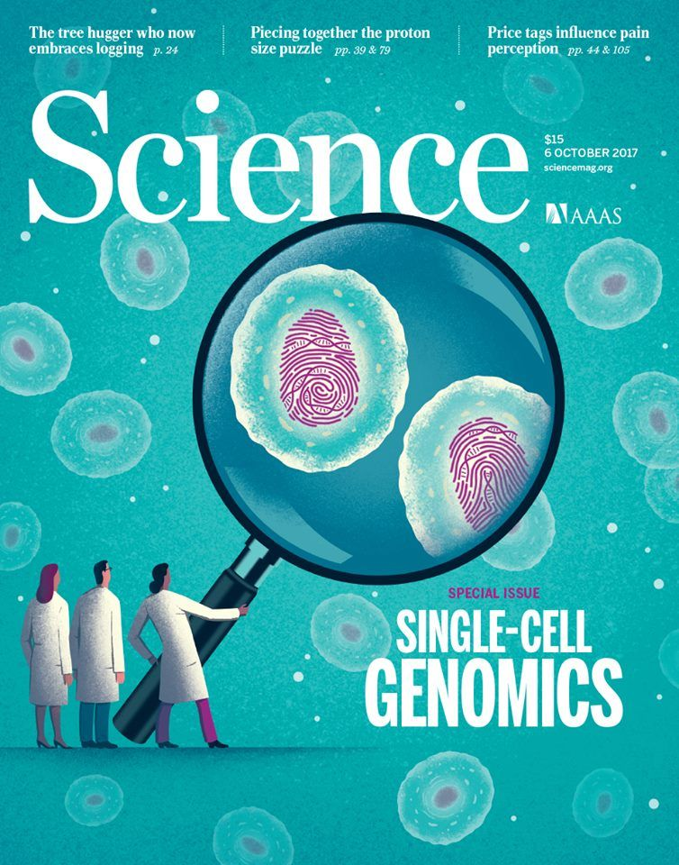
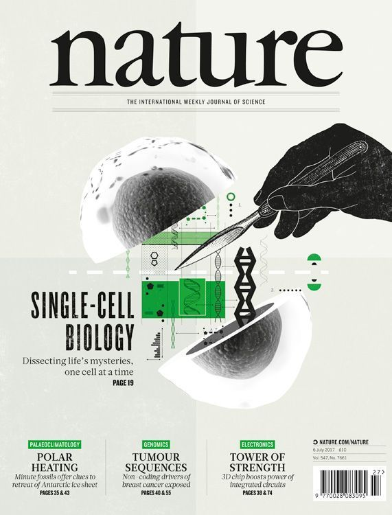
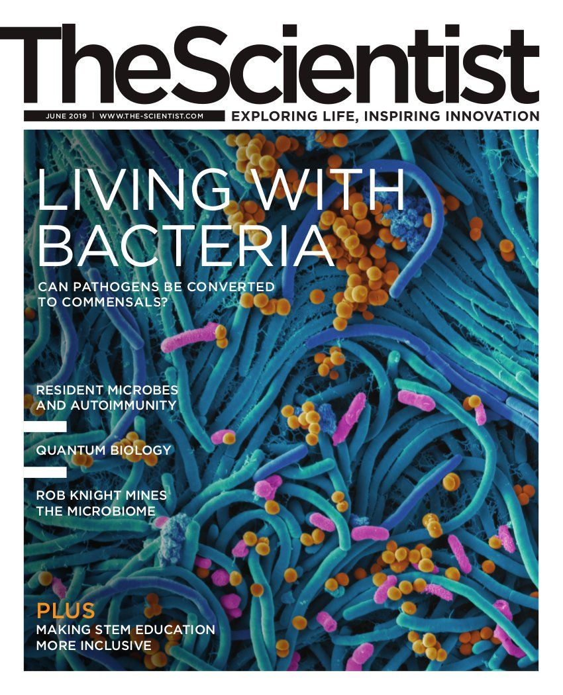
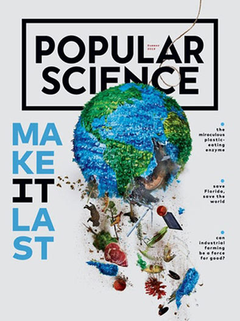
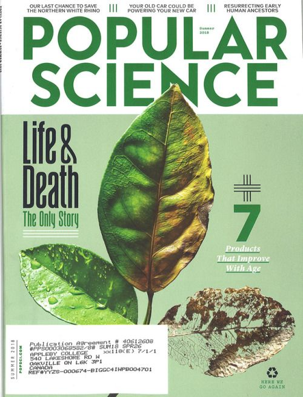

DnA
SCOPRI
IMPARA
SOGNA







LA NOSTRA MISSIONE
La mission di DnA è quella di facilitare la comprensione delle notizie
scientifiche e tecnologiche nella popolazione
attraverso la creazione di contenuti editoriali e digitali a tema scientifico e tecnologico.
Inoltre, DnA si impegna a contribuire
alla divulgazione scientifica e sostenere la ricerca scientifica
donando l'1% dei ricavi a un ente differente ogni anno, scelto dagli abbonati.
PER LE SCUOLE
DnA offre alle scuole una sezione dedicata ai bambini e ai docenti della scuola primaria,
con contenuti gratuiti e aggiornati per l'integrazione nelle classi di Scienze. La sezione per i bambini è stata
creata per rendere la scienza divertente e coinvolgente, con video educativi, attività interattive e risorse didattiche.
La sezione per i docenti include schede didattiche, idee per progetti di classe e suggerimenti per integrare la scienza nei
programmi scolastici. L'obiettivo di DnA è rendere la
scienza accessibile a tutti e formare i futuri scienziati e tecnologi di cui il mondo ha bisogno.
ABBONAMENTI
L'abbonamento a DnA comprende l'accesso a una sezione di approfondimento online, dove si possono
trovare contenuti editoriali e digitali a tema scientifico e
tecnologico. La sezione di approfondimento è aggiornata costantemente con nuovi articoli, interviste, video e podcast.
Per abbonarsi, basta premere sul pulsante sottostante per essere portato a tutti gli abbonamenti. Si può scegliere tra diversi tipi di abbonamento, che differiscono per durata e prezzo. Una volta abbonati, si ha accesso alla sezione di approfondimento per la durata dell'abbonamento scelto.
Inoltre, l'1% dei ricavi degli abbonamenti viene donato alla ricerca scientifica, aun ente differente ogni anno scelto dagli abbonati. In questo modo, DnA si impegna a sostenere la ricerca scientifica e a contribuire alla divulgazione scientifica nella popolazione.
Per abbonarsi, basta premere sul pulsante sottostante per essere portato a tutti gli abbonamenti. Si può scegliere tra diversi tipi di abbonamento, che differiscono per durata e prezzo. Una volta abbonati, si ha accesso alla sezione di approfondimento per la durata dell'abbonamento scelto.
Inoltre, l'1% dei ricavi degli abbonamenti viene donato alla ricerca scientifica, aun ente differente ogni anno scelto dagli abbonati. In questo modo, DnA si impegna a sostenere la ricerca scientifica e a contribuire alla divulgazione scientifica nella popolazione.